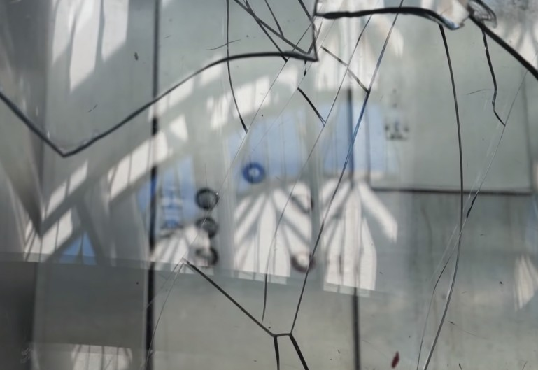
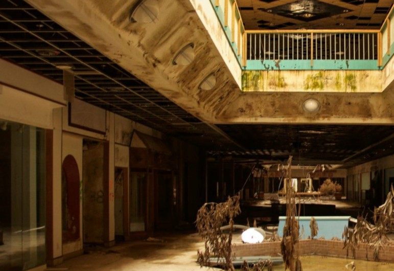

Dan Bell is an American filmmaker and producer known for his work documenting urban decay. He began the “DEAD MALL SERIES” in 2015 on YouTube out of his fascination in retail death following the 2008 financial crisis.
In his newest show, “ANOTHER DIRTY ROOM,” Bell and his friends investigate poorly rated and evidently
disgusting motel rooms across the country. He has also released several videos following a recent unsolved murder case that has run cold surrounding Baltimore’s infamous Leakin Park.
Special thanks to Dan Bell
Landmark Mall
Alexandria, Virginia
Rolling Acres Mall
Akron, Ohio
Regency Square Mall
Jacksonville, Florida
Owings Mills Mall
Baltimore, Maryland
Fairgrounds Square Mall
Reading, Pennsylvania
Security Square Mall
Baltimore, Maryland
Middletown Mall
Fairmont, West Virginia
East Brunswick Square Mall
East Brunswick, New Jersey
Middletown Mall
Fairmont, West Virginia
The Gallery at East Market
Philadelphia, Pennsylvania
Hampton Square Mall
Essexville, Michigan
Pittsburgh Mills Mall
Pittsburgh, Pennsylvania
Lincoln Mall
Chicago, Illinois
Oak Hollow Mall
High Point, North Carolina
Metro North Mall
Kansas City, Missouri
Coventry Mall
Pottstown, Pennsylvania
Forest Fair Village Mall
Cincinnati, Ohio
Landmark Mall
Alexandria, Virginia
Dort Mall
Flint, Michigan

Old Town Mall
Baltimore, Maryland
Frederick Town Mall
Frederick, Maryland
East Brunswick Square Mall
East Brunswick, New Jersey
J),wloll1f'

,tmrdo.,i1 :r..,·1/,· nr· i·,w ,w lon;,'l·r lumor f ll,1do!/1• l/11..w vdt•
j) t' 'it ll(J/tF J/1 or YJl'fJfJIJ,
,1i, th lrh' 1tm11.
Frederick Towne Mall
Frederick, Maryland
Security Square Mall
Baltimore, Maryland

Rolling Acres Mall
Akron, Ohio
Frederick Towne Mall
Frederick, Maryland



Rolling Acres Mall
Akron, Ohio
Hampton Square Mall
Essexville, Michigan
Dort Mall
Flint, Michigan
Security Square Mall
Baltimore, Maryland
Owings Mills Mall
Baltimore, Maryland
Pittsburgh MIlls Malls
Pittsburgh, Pennsylvania
Frederick Towne Mall
Frederick, Maryland
Rolling Acres Mall
Akron, Ohio
Regency Square Mall
Jacksonville, Florida
Marley Station Mall
Glen Burnie, Maryland
Old Town Mall
Baltimore, Maryland
.(r.
-------
, -
-
Frederick Towne Mall
Frederick, Maryland
Mountaineer Mall
Mograntown, West Virginia
Forest Fair Village Mall
Cincinnati, Ohio
Owings Mills Mall
Baltimore, Maryland
Rolling Acres Mall
Akron, Ohio
Why malls? I always looked forward to going to the mall when I was younger. Perhaps that was just because I wanted to go somewhere on the weekends and occupy myself instead of staying at home all day and relaxing like any other person under the age of 18 years old. It was a fun place to be, comparatively.
I stopped regularly going to the mall in my mid-teenage years and never desired to go back often until I realized I wanted to get a job. Sophomore year of college, I saw
a handful of openings for sales associate positions at my local, rinky-dinky mall that I never really visited anymore because my family opted for the nicer, bigger, cleaner malls that were only 20 minute drives away.
I got a job at Charlotte Russe. It was often boring, but easy. I made friends and enjoyed what I did — until it was cut short due to the company filing for bankruptcy six months into my time there. The last few weeks were the
most fun time I ever had working, and simultaneously the most miserable.
I saw the building I had known since I was three years old deterioirating — purging its guts at an exponentially fast rate. I saw the reality of how of capitalism created the spaces I once enjoyed so much come to tear it away from me.
I didn’t actively search for another job for a few months, until I realzied I was in dire need of money again — so
I applied to Target. Department retail was a whole different monster to slay at the end of the day, and I only lasted about two months before deciding I wanted to go back to the mall environment, and like a sign from God, the night I decided I was going to put my two weeks in, my manager from Charlotte had reached out and offered me a position at the chain boutique she was now a manager at; I took it and ran.
The mall has always fascinated me and ultimately plays a large part of life. At the time of the creation of this book, I am still working in that boutique and I can see the same fate coming for this mall as well. Chain stores are moving out, mom-and-pop’s are filling the blanks, and the crowds are thinning quickly. We only see a dozen people come in to our store on a good day.
As someone who sees how terrible consumerism can be, I see how there is a such a strong but strange kind of beauty in the decay of the mall. To see it happen right before your eyes and even be a part of it is leaves a bittersweet taste that I’d like to remember, but I hope I don’t have to hold another retail funeral.
A dead mall, or ghost mall, or simply abandoned mall is a shopping mall with a high vacancy rate or a low consumer traffic level, or that is dated or deteriorating in some manner.
Many malls in North America are considered “dead” (for the purposes of leasing) when they have no surviving anchor store (often a large department store) or successor that could serve as an entry into or attraction to the mall.
Without the pedestrian traffic that department stores previously generated, sales volumes decline for almost all stores and rental revenues from those stores can
no longer sustain the costly maintenance of the malls. Without good pedestrian access, smaller stores inside malls are difficult to reach.